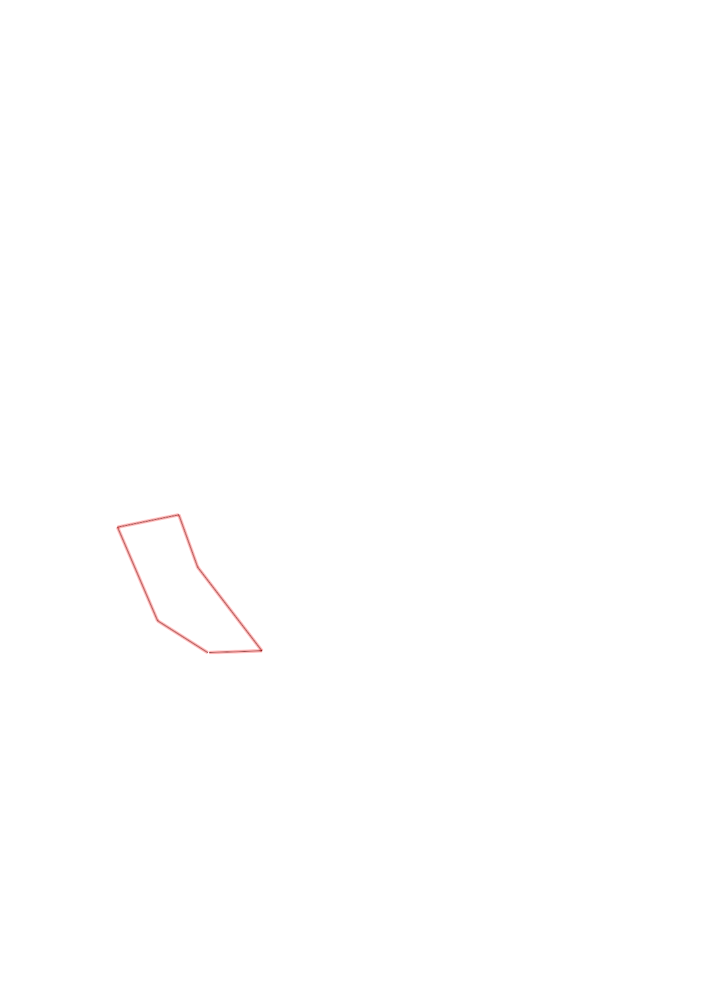
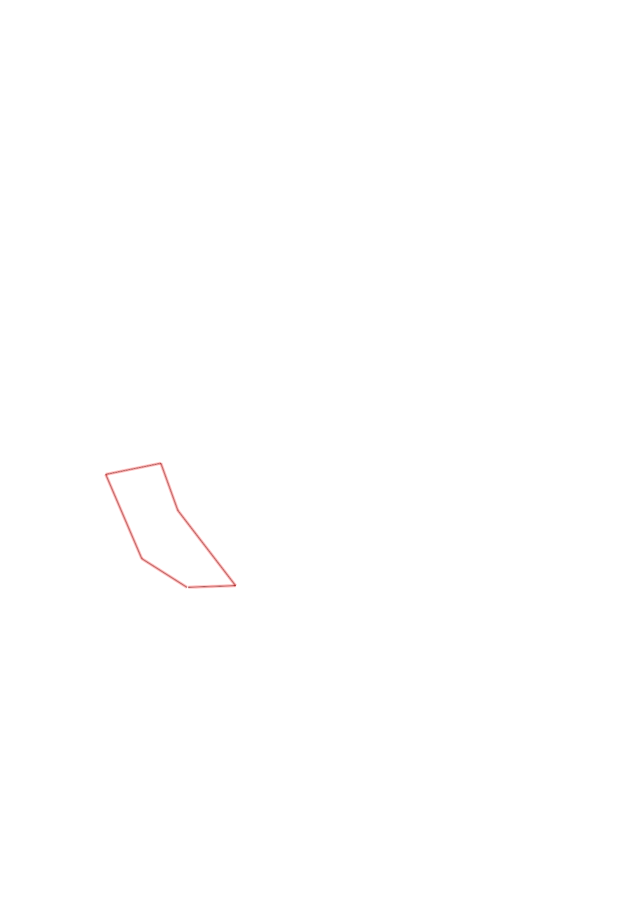

| Control |
Points |
Time Punched |
Distance |
Your Time |
Pace |
Place |
Fastest Time |
Median Time |
% Behind Fastest |
| 35 |
30 |
|
0.27 |
0:02:40 |
09:52 |
15 / 17 |
0:01:07 |
0:01:37 |
138% |
| 72 |
70 |
|
0.46 |
0:10:08 |
22:01 |
3 / 3 |
0:05:18 |
0:07:42 |
91% |
| 58 |
50 |
|
0.28 |
0:23:47 |
1:24:56 |
5 / 6 |
0:02:22 |
0:03:34 |
904% |
| 51 |
50 |
|
0.25 |
0:10:37 |
42:28 |
9 / 9 |
0:01:43 |
0:02:53 |
518% |
| 63 |
60 |
|
0.47 |
0:06:31 |
13:51 |
1 / 1 |
0:06:31 |
0:06:31 |
0% |
| Finish |
0 |
|
0.23 |
0:02:39 |
11:31 |
10 / 11 |
0:00:57 |
0:01:23 |
178% |
Total Distance Covered: 1.96km
Points Scored: 260
Late Penalty: 0
Final Score: 260
Total Time: 0hours 56minutes 22seconds
Efficiency: 132.65 points/km
 
